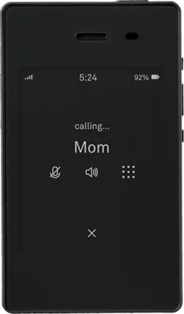
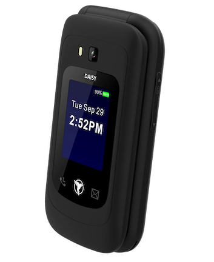
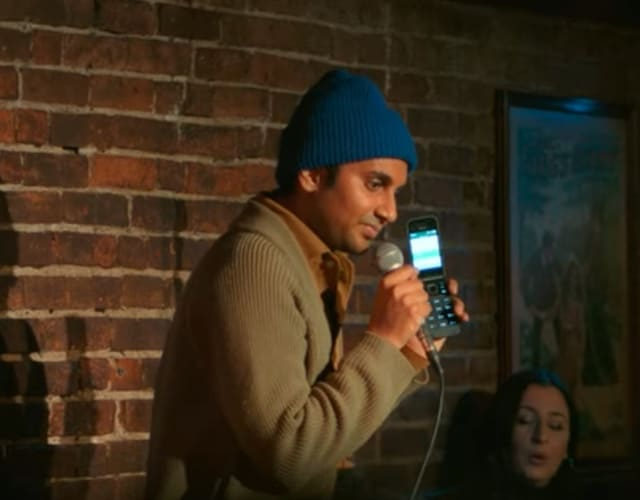

First off...to prove I'm not some digital minimalist...
I am a full time augmented and virtual reality researcher / software programmer. I am an iOS developer, and I program augmented reality apps with Apple's ARKit. My favorite podcast is atp, where they mostly talk about new Apple products. So, I am not against iPhones. I will continue to devleop iOS augmented reality apps.
Second, I am not a skilled photographer, and I love that I can point my iPhone at anything and it will do a ton of work for me to get a photo that looks great and isn't blurry.
Third, my whole family uses iMessage, and we send each other a lot of photos of our lives.
Fourth, I intend to increase the amount of youtube videos I make. I enjoy making them, and my iPhone has been my main camera. I just point it at what I want to film and it looks great to me. I can even sort of blur the background which looks cool.
I do not like how much time I spend staring at the news, or youtube, or what other people have created on my iPhone, instead of creating something myself or reading the stack of books I always have lying around. I do not like the impression I am making on my young daughter who must think I "always" or "often" am looking at my phone. Whether I'm reading politico for no good reason, or texting a friend, or checking my bank account..those activities all appear the same to a young girl on the other side of the room who doesn't have a phone.
I am aware there are people who create a lot of valuable things in the world, and manage to avoid getting sucked into a smartphone. see Cal Newport. And there are others who create interesting art and skip having a cell phone altogether: see Jack White. Then there are other artists who have switched to a dumber phone over time: Aziz Ansari, Ed Sheeran.
So, I have begun my dumb phone search.
This led me to Jose Briones who makes videos on this topic, and created https://josebriones.org/dumbphone-finder
$300!
An interesting one is the Light Phone. It has plenty of downsides, but the main thing is that it looks like a tiny Kindle. It uses e-ink.
What I am concerned about is: they actively take and consider suggestions, and it's a fascinating object. That makes me wonder if I will spend time admiring the Light Phone, reading about features they are considering, etc. From their site:
While considering additional functionality for the Light Phone II, it's important to remember all of the features it will never have. The Light Phone II will never have social media, internet browsing, email, news, or ads.
Again... $300 is a lot! 
$200 is also a lot.
We can contrast that with Sunbeam Wireless, a company started by mennonites. They take an off-the-shelf boring flip phone and customize the OS to be minimal. No web browser, no ability to add apps. 
What about just getting whatever Nokia is available, like Aziz did? 
Well - those Nokia phones still have web browsers and youtube.
Sort of unsurprising for me, I have been experimenting with having multiple iPhones instead of 0 iPhones. I am trying an iPhone 12 Mini, without a SIM card, as my Camera + Spotify + Overcast machine.
It has the Freedom App installed which blocks all websites 24 hours/day
It has messages disabled, no email connection, no calendar connection.
it does have Apple Notes, Voice Memos, and my favorite note taking app: Bear
All notifications are disabled. All automatic updates are disabled.
Surprising side effect - it is much snappier and seems to run more quickly than my "phone" which is also an iPhone 12.
Will it work? We will see. So far, using this has removed any feeling of foreboding that I usually get which is: 'man...if I pick up that phone it's going to demand something of me: there's gonna be some message or worse some unknown message text for some list I'm on, or some app update, or whatever.
Something I am learning from this: I am much happier with completely zero notifications. I thought I was had tamed them on my iPhone, but this iPhone 12 mini approach of just turning all of it off is much more relaxing. I suppose if it also had a sim card, and I turned on messages, I would need to allow phone calls to prompt a notification, but I could live with messages not having notifications.
Just got back from a week vacation wih my family to Florida, including Universal Studios. What I tried was: I left my iPhone that has a SIM card at the hotel. I brought with me the iPhone 12 Mini which was my Camera and Audio player.
has no sim card
has no email
has Freedom app on a 24 hour session to block websites
does not receive SMS nor iMessage
does not receive Facetime
has all notifications off.
This was really close to being great. It runs very quickly, and I have zero sense of foreboding when I take this out of my pocket to use it. There is nothing to get distracted by. It is just acting as a camera and music/podcast player. The only time I found myself distracted by it was playing with customizing the wallpaper, etc. The main con: my wife & I could not call or text each other. <- She did not like that.
The amount of apps on this iPhone 12 mini is increasing...hmm. I tried, during Christmas break, to swap my sim card into this 12 mini, turn off my regular 12, and make this my regular phone. It's better with all notifications, auto-updates, lock screen info turned off. It's definitely more pleasant, but I find myself using Safari to browse cnn for no reason.
The next hurdle when switching to a dumb phone will be spam calls. I mostly get spam calls. I've signed up for anything related to a do not call list that I can find, but I still get about 5 spam calls per day.
I reached out to Light Phone folks to ask if their phone can silence unknown callers.
Me:
"Does the light phone have this? Maybe it would be called:
"Allow incoming calls from contacts only”
Or
"silence unknown callers”
Light Phone support:
"Thank you for your interest in the Light Phone. Other than being able to block individual numbers, we don't have any unique spam call filters at this time. We do hope to have a 'contacts only' call filter by the end of next year."
I just ordered a Sunbeam F1 Orchid to try.
Ugly looks, but:
can silence unknown callers
has maps
has no browser
voice to text
Switching to the Sunbeam F1 Orchid as my cell phone has been better than I imagined.
I had an important work project to complete and demonstrate on 1/13/2023, and I was done well ahead of time. I was done early enough that I went over what I created several times to improve it before the demo.
In the recent past, completing this kind of project always took working late, and sometimes on weekends to get the coding done on time.
What does this have to do with talking about the Sunbeam F1?
Well, I am attributing my diligence and ability to complete all this work only during working hours to the mental freedom, and the lack of easy distraction, that I was afforded by not having an internet search enabled connected device in my pocket all the time.
I turned off my iPhone, switched the SIM card to the Sunbeam, and that started the experiment!
This past week at work I had just the Sunbeam with me for texting and phone calls:
The voice to text functionality is the best I've used. They say they use Microsoft's service for this. The automatic punctuation is even good.
The touchscreen. I honestly forgot it would have a touchscreen, so this was a nice surprise.
But to the point - when work was difficult, and I'd usually take a break watching youtube, or checking cnn for no reason, the only thing I could do on the Orchid for entertainment was...change the wallpaper...from among the 5 or 6 low res images that come with it. (I went with the waves)
More benefits!
There are no apps on this thing to update.
There are no apps bugging me with notifications.
Now the maps - I have not given these a solid trial. I used it once or twice while driving to navigate, and it works, but I need to check this out more thoroughly before recommending it or not.
Now for the texting. Type with T9 is pretty awful. That's not for me. I'm easily able to type on the tiny qwerty touchscreen and there is automatic word suggestions I can select from while typing. But again, the voice to text is excellent, so I have been using that most of the time.
But what about iMessage??? Well, I still a have an M1 MacBook air, and I still own my iPhone. I removed my cell phone number from iMessage, so it is only associated with an email address. People can iMessage me, and it'll show up on my MacBook.
Also, I am an iOS augmented reality developer. I am not selling my iPhone. I removed the SIM as mentioned, turned off iMessage, and tuned off all notifications.
Another part of this experiment, which has not been easy to solve, relates to music & podcasts. I have been using a Garmin vivoactive 4 as my watch for a couple years, partially because it has Spotify offline. This works...poorly. It technically works, but the limitations are severe. For example: there is no fast forward or rewind. If you use it to play a podcast, it does not remember your position. So if you start a long podcast, leave the garmin spotify 'app' to do something else, thn try to play that again it has no idea where you were and starts again at the beginning...and you cannot fast forward. So, it is pretty awful for podcasts.
And for me, in 2023, I'm treating things like this as experiments. If it doesn't end up working for me, or improving my day to day, then I will try something else. So far, this week, switching to this is a definite improvement.